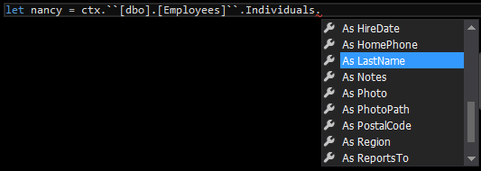
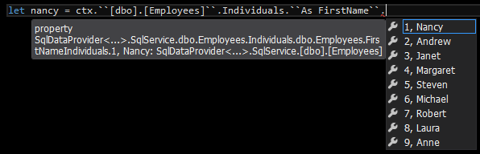

The Erasing SQL type provider (codename John)
Introducing my latest type provider, designed to query general SQL databases. This is very much an alpha cut, it is by no means feature complete, is still a mess in various areas and has only been tested on a very limited selection of databases. I will provide a brief overview of its main features and lack thereof, followed by a fairly detailed explanation of the most prominent features. There's other features not discussed here, hopefully there will be some followups to this in the coming weeks, along with some proper documentation in the github repository.
What the provider does
- Provide an IQueryable interface over a SQL database’s tables and views
- Supports the use of F# query expressions
- Erases types down to a common runtime type – there is no code generation here, which means you can connect it up to massive schemas
- The provider is designed around System.Data. The current single concrete implementation is for Microsoft SQL Server, however you can add additional providers by implementing the ISqlProvider interface and writing a bunch of code that will, on demand, extract the relevant schema data and generate a SQL query from a distilled version of the LINQ query in question – most databases will be able to use the Microsoft SQL Server implementation as a template for a solid starting point (most of the hard work has already been done). You can then select your database provider target with a static parameter.
- Schema exploration – instead of needing to know the database structure and constraints in order to write effective queries between objects, constraint information is displayed as relationships on entities. You can simply enumerate these, query off of them directly or use the select-many syntax. Join data is inferred for you. This makes your life way easier for both exploring unknown databases and removing the tedium of writing explicit joins everywhere.
- Individuals - The provider will additionally query the top x rows of each table and bring the data directly into the F# programming language. You are able to view said individuals in intellisense using your choice of column name. Once you have an individual you can use it just like any other entity including enumerating its relationships and querying from it.
- Basic stored procedure support. This has only just been added and is fairly weak presently, and pretty much not tested at all.
- Produces Highly Non-Optimised SQL ™
What the provider does not do (yet)
- Make the tea
- Support updates to data
- Have lazy features (tip – don’t select 100mb of data)
- Support any custom types or table value parameters
- Support OUT parameters on sprocs
- Have explicit support for nullable types
- Support grouping, System.Math functions, or outer joins (fret not though you can indeed outer join if you use the select-many syntax!)
- Have anything to do with Squirrels
- A bunch of other stuff
But Why!
People from F# land will know that there already exists an official SQL type provider. This begs the question, why am I crazy enough to tackle such a massive job, surely not just for the fun of it! The answer to this is several reasons, with the primary one being that the existing type provider uses SQLMetal.exe in the background to generate code. Unfortunately this means that you end up with the entire database schema in a huge amount of code files, which in extreme cases will not work at all. F# type providers give us the ability to provide erased types. You can think of these types as appearing to be real static types at compile-time, but at runtime they are erased down to some common type. This nets us all the benefits of static typing, with none of the overhead of the generated code - plus if the database schema changes, your program will no longer compile, in contrast to a generated code solution which would be unaware of schema changes unless the code is re-generated at every compilation, which is generally not a viable approach - and stale generated code can have disastrous consequences at runtime.
In addition to this, the existing provider is not open source and it can only work with MS SQL Server (to my knowledge). Part of my aim with this work was to introduce an extensible and open source SQL type provider for the community which in the future can target SQL Lite, Oracle, Postgre and so on. Finally, I wanted to provide a much simpler way of navigating around an unknown database schema, which is surfaced in the ability to traverse the data based on the constraint metadata. I have spent too much time in the past having to dig around in SQL to find which tables join to what others and how, and having to explicitly provide all that information every time I write a query - only to forget it 2 months later and repeat the process. Simplifying the data access in this manner makes programming easier, faster and more maintainable.
First Steps
Once you have built the the shiny new dll from my github, you should create a new F# project and a fsx script file. You can then reference it like so
1 |
#r @"F:\dropbox\SqlProvider\bin\Debug\FSharp.Data.SqlProvider.dll" |
You might get a security dialog warning of impending doom but you can safely ignore that. The next stage is to create a type alias using a connection string.
1 |
type sql = SqlDataProvider<"Data Source=localhost;Initial Catalog=Northwind;Integrated Security=true;"> |
This is moment of truth #1. If it blows up here with red squigglies, it’s either a connection issue or something that I have messed up due to not being able to test it with many databases. For reference I have tested it with Northwind, both the AdventureWorks databases, and some simple databases that exist in my current place of employment. All servers were running 2008R2. I will use the Northwind schema for all examples henceforth.
The base schema would have be generated from the connection string in the static parameter; to actually use the provider you will need to create a data context like so:
1 |
let ctx = sql.GetDataContext() |
You can pass in a runtime connection string to this method if it is different to the one in the static parameter (the static one must be constant and available at compile time)
You will now be able to see all tables / views directly from the data context object, and also a property called Stored Procedures which is amazingly enough where the stored procs live.
Note that I don’t currently support any non-native sql types. For tables /views you just won’t see those columns, and stored procs that have said types as parameters simply won’t be generated. OUT parameters and table values types are also not supported – sprocs with those will also not appear.
Querying
At its simplest you can enumerate an entire table for all records like so:
1 |
let customers = ctx.``[dbo].[Customers]`` |> Seq.toArray |
if you were to now index that array you should see strongly typed properties corresponding to the columns (and some other stuff)
{kind=link}
To actually query you use the query syntax as such
1 2 |
query { for c in ctx..``[dbo].[Customers]`` do select e } |> Seq.toArray |
I currently support the following LINQ functions; select, select many(for), join, distinct, where, take (top), exactlyOne (single), sortBy, sortByDescending, thenBy, thenByDescending
Explicit joins look like this
1 2 3 4 |
query{ for cus in ctx.``[dbo].[Customers]`` do join ord in ctx.``[dbo].[Orders]`` on (cus.CustomerID = ord.CustomerID) join ship in ctx.``[dbo].[Shippers]`` on (ord.ShipVia = ship.ShipperID) select (cus.CompanyName,ord.ShipName) } |> Seq.toArray |
Here the projection creates a tuple of company name and ship name; the provider supports arbitrarily complex projections, you can in theory do anything in the projection. The projection is also analysed to establish which fields to select for performance reasons – in this case the query will only select the two field names projected, if you select entire entities then it will select all their columns.
The previous example showed an inner join. Outer joins are not currently supported in this syntax because that requires me to implement group join which is somewhat epic and I have been avoiding it wherever possible. You can however perform outer joins by using the select-many syntax. This syntax allows you to navigate around the database constraints without prior knowledge of its schema (woop!). You will see constraints (relationships) as properties of the table you are querying. You can simply “for” (select many) over them and the join information will be inferred for you – Intellisense will helpfully tell you the details about the relationship so you can understand which is the primary and foreign side.
1 2 3 4 5 |
query{ for cus in ctx.``[dbo].[Customers]`` do for ord in cus.FK_Orders_Customers do for ship in ord.FK_Orders_Shippers do for emp in ord.FK_Orders_Employees do select (cus.CompanyName,ord.ShipName,emp) |> Seq.toArray |
You can make these outer joins (which will perform a left or right join depending on which way around the relationship is) by using the (!!) operator before the table name.
1 2 3 4 5 |
query{ for cus in ctx.``[dbo].[Customers]`` do for ord in (!!) cus.FK_Orders_Customers do for ship in (!!) ord.FK_Orders_Shippers do for emp in ord.FK_Orders_Employees do select (cus.CompanyName,ord.ShipName,emp.FirstName) |> Seq.toArray |
Criteria applied with where clauses can be used anywhere in the query subsequent to the relevant table identifiers being bound. Multiple where clauses in a query are AND’d together. You should be able to use all logical operators and basic direct predicates that you would expect to work – you won’t be able to call other functions inside a where clause though. The algorithm should be able to deal with any level of criteria complexity with multiple nested / bracketed AND / ORs. You can also use the following special operators : =% (like) <>% (not like) |=| (In) |<>| (Not In). With the In operators you must provide an inline array of options, eg [|”John”;”Juan”|] fsharp
query{ for emp in ctx.``[dbo].[Employees]`` do
where (emp.Address =% "%g%")
join order in ctx.``[dbo].[Orders]`` on (emp.EmployeeID = order.EmployeeID)
where (emp.FirstName |=| [|"Steven";"Janet"|])
distinct
select (emp.Address, emp.FirstName + " " + emp.LastName, emp.BirthDate ) } |> Seq.toArray
Individuals
If a table has a non-composite primary key, you are able to project its SQL entities directly into the IDE via its “Individuals” property. This will contain the first 1000 rows of the table (this is configurable via a static parameter). By default it will list them using whatever the primary key text is as such:
1 |
let nancy = ctx.``[dbo].[Employees]``.Individuals.``1``.FirstName |
Obviously, with an integer as a primary key this is not very helpful in identifying / exploring the records, so instead, each column of the table has an associated property which when navigated to will re-project the individuals into Intellisense with the value of the chosen column name, eg


Note this will now fail to compile if someone changes Nancy’s first name in the database! (cool huh!)
Given any instance of a SQL entity, whether it be from an individuals property or some query, as long as it contains its primary key you can then navigate directly off the relationships used in the select many syntax (how awesome is this!) for example, you can find out Nancy’s orders by simply doing this :
1 |
nancy.FK_Orders_Employees |> Seq.toArray |
this means you can defer execution of additional joins from a prior query, because you might want to only process further information on selected objects, perhaps at a much later time. Because this is creating another query behind the scenes, you can even query directly off a relationship like this
1 2 |
query { for order in nancy.FK_Orders_Employees do where (order.CustomerID =% "V%") } |> Seq.toArray |
which I think we can agree is fairly awesome :)
Stored Procs
Sprocs have only just been added and are pretty much untested. It doesn't support complicated sprocs with multiple result sets or differing result sets depending on branching logic. It basically executes the proc with default parameters using the SchemaOnly command type, and infers a new type based on the return metadata. You will always be forced to supply all parameters even if they are optional. MS SQL Server 2012 supports some better mechanics for getting metadata about stored procedures, but I have not implemented support for those yet.
Final Words
Here’s a final query that shows some of the other keywords for syntax reference
1 2 3 4 5 6 7 8 9 |
query{ for emp in ctx.``[dbo].[Employees]`` do for order in emp.FK_Orders_Employees do join ship in ctx.``[dbo].[Shippers]`` on (order.ShipVia = ship.ShipperID) for cust in order.FK_Orders_Customers do join sub in ctx.``[dbo].[Order Subtotals]`` on (order.OrderID = sub.OrderID) where (emp.LastName =% "F%" && ship.CompanyName <>% "%owl%" && sub.Subtotal >= 1629.9M ) sortByDescending cust.CompanyName take 10 select (order.OrderID, order.OrderDate, cust.CompanyName, emp.LastName, ship.CompanyName, sub.Subtotal ) } |> Seq.toArray |
A word on nullable types – I do not currently support them :) what this means is that for a nullable column that has a null value, you will simply be given default of its type, with a special case for string allowing it to return string.Empty. Set phasers to null. (No nulls should be produced in the usage of this software)
There's other stuff going on such as data binding, debugging event hooks that will show you the LINQ expressions triggering and the generated SQL that is to be executed, and various smaller things that I have probably long since forgotten about. The design is heavily based on my Dynamics CRM type provider so if you are lucky you might even find some references in the code to CRM :)
Hopefully it doesn't immediately blow up for you, although I wouldn't be surprised given the very small amount of databases it has been tested against. The provider is large, complex, and LINQ is really crazy!